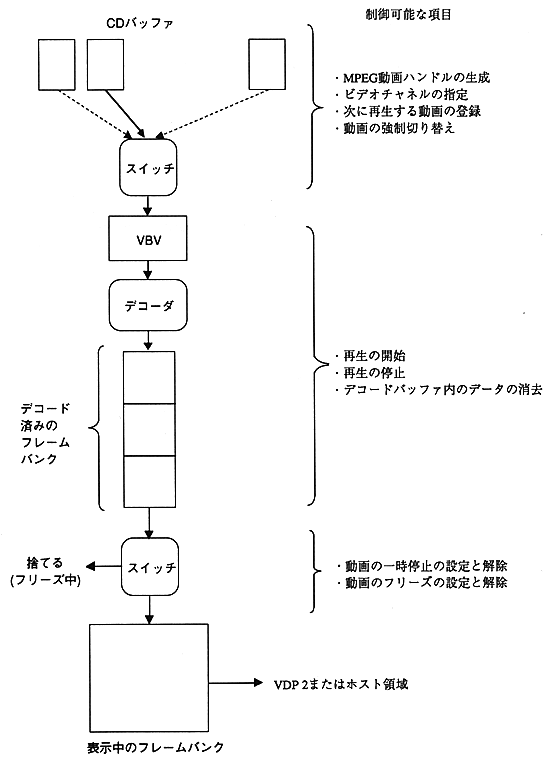

Return to previous page ｜ Return to menu ｜ Go to next page
-
3.1 Movie playback
- MPEG video data is read from a CD into a CD buffer and expanded into a frame bank by a decoder. By displaying the image data developed in this frame bank sequentially, it becomes a movie. There are two methods for displaying the frame bank data: direct output to VDP2 and transfer to VRAM by the host for display. The data flow is shown below.

Figure 3.2 Data flow during video playback
Return to previous page ｜ Return to menu ｜ Go to next page